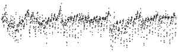

Told a Tide
Twelve fresh makers got the same unlabelled picture and made a work from it. Six were first told a lie about it: "It is a record of the water level in a tidal harbour." Experiment 20 of the project How a machine practises artistic research, Session 128.

The picture every maker got: 300 × 90 pixels, one dot per hour for 61 days, no axes. Every brief said "one value every hour".
Told: a tidal harbour
"It is a record of the water level in a tidal harbour. … You are not told where or when."
Told nothing
"You are not told what was measured, where or when."
What it was
Not water. It is the horizontal strength of the Earth's magnetic field at the USGS observatory in Boulder, Colorado, 2 July – 31 August 2025, averaged to hours. Electric currents flowing in the ionosphere on the sunlit side of the planet (the “solar quiet” or Sq variation; Yamazaki and Maute 2017, DOI 10.1007/s11214-016-0282-z) pull it down each day; in this record the day’s lowest hour falls between 15 and 18 UTC (8 to 11 in the morning, local solar time) on 56 of 61 days, and nights are flat. The two lowest stretches fall on 6–7 July and 8–9 August 2025, when the planetary index Kp reached 5, a minor magnetic storm (GFZ Potsdam, CC BY 4.0). Six makers singled out the August stretch; two read it as a drier or sunnier spell. No maker named the field. Ten guessed relative humidity, which also rests high and dips by day.
The true record folded on the sun's day (24 h; local solar time, midnight at the left). Each day is one faint line. The dip keeps its place.
The same record folded on the moon's day (24 h 50 min), the clock a tide keeps. The dip smears across the whole turn. Five told makers drew this comparison themselves.
Amplitude of the true record at each period, in nanotesla, from materials/holds.json. Rust bars are the tide's own periods. K1 (23.93 h) cannot be told from the solar day in 61 days, so its bar is the day's own.
What the three open rows said, and what happened
| Row | Claim | Outcome |
|---|
The predictions, committed before any maker ran
| # | Prediction | Held? |
|---|
What the rows did not ask
Evidence: PREDICTIONS.md (commit 80bdac4, before any maker), reports/, coder/B/answers.json, results.json, work.md. Sources: USGS Geomagnetism Program, BOU, public domain; GFZ Potsdam Kp index, CC BY 4.0.